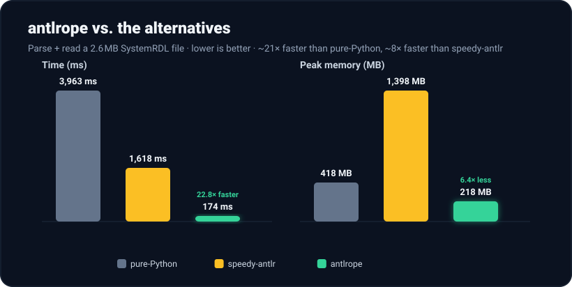

Benchmark: SystemRDL¶
A comparison of Antlrope, on a real grammar, with the two alternatives available to a Python ANTLR user:
- the official antlr4-python3-runtime (the pure-Python runtime), and
- speedy-antlr-tool, which runs the parser through ANTLR's C++ target and translates the parse tree back into Python objects. It is a drop-in accelerator that keeps the normal tree and visitor API.
The grammar is SystemRDL, a hardware register-description language. Its grammar is a 461-line combined grammar with no actions or predicates, which is the target-agnostic case that all three tools support.

TL;DR¶
Parsing a 2.6 MB input (≈86k lines, ~77k parse-tree nodes):
| parse time | peak memory | vs pure-Python | vs speedy-antlr | |
|---|---|---|---|---|
| pure-Python runtime | 3716 ms | 432 MB | 1.0× | — |
| speedy-antlr | 1427 ms | 1381 MB | 2.6× | 1.0× |
| antlrope | 179 ms | 310 MB | 20.8× | 8.0× |
Antlrope is the fastest of the three and uses the least peak memory. The gap remains end to end, when you also consume the result, and the consumer's output is identical to that of a pure-Python tree walk.
Reproduce it. The full harness (grammar, generated parser, the
antlropefacade, the bench scripts, and the inputs) is atzuzukin/srdl-bench. With pixi:pixi run consume.
What's measured¶
Each tool parses the input and produces the structure you would then consume. This is the cost you pay before any application logic runs:
- pure-Python: lex and parse to a Python parse tree.
- speedy-antlr: lex and parse in C++, then translate the tree into Python nodes
(
sa_systemrdl.parse, the accelerator bundled insystemrdl-compiler). - antlrope: parse in C++ and emit the full, unfiltered bulk event buffer, with no Python tree.
Wall-clock is the best of 7 warm runs over an in-memory string; peak memory is
the process's peak resident set (ru_maxrss), each tool measured in a fresh
process. Inputs are a real Accellera register block (atxmega_spi) replicated with
unique names to three sizes.
Environment: Apple Silicon, macOS 26, CPython 3.14.5; antlr4-python3-runtime 4.13.2; ANTLR tool 4.13.2; systemrdl-compiler 1.32.2 (speedy-antlr accelerator); antlrope 0.1.21.
Results¶
| input | tool | parse time | peak memory |
|---|---|---|---|
| small (85 L, 3 KB) | pure-Python | 3.4 ms | 20 MB |
| speedy-antlr | 0.9 ms | 32 MB | |
| antlrope | 0.8 ms | 28 MB | |
| medium (8.6k L, 0.26 MB) | pure-Python | 281 ms | 97 MB |
| speedy-antlr | 85 ms | 192 MB | |
| antlrope | 18 ms | 70 MB | |
| large (86k L, 2.6 MB) | pure-Python | 3716 ms | 432 MB |
| speedy-antlr | 1427 ms | 1381 MB | |
| antlrope | 179 ms | 310 MB |
At the smallest size, loading the interpreter and extension dominates (about 20–30 MB of baseline memory, and parse times under a millisecond); the differences appear once the input is non-trivial.
End-to-end: parse and consume¶
Parsing is only half the job; you also have to consume the result. A representative
consumer task is to collect every identifier (ID token) in the file,
implemented the same way in all four configurations below (pure-Python and
speedy-antlr walk the tree with a ParseTreeListener, and Antlrope uses an event
listener in two variants). All four produce the same list of identifiers (verified
by hash; 32,000 ids on the large input).
| input | tool | end-to-end time | peak memory |
|---|---|---|---|
| medium (0.26 MB) | pure-Python | 306 ms | 99 MB |
| speedy-antlr | 102 ms | 189 MB | |
| antlrope (all terminals) | 20 ms | 63 MB | |
antlrope (native ID filter) |
17 ms | 56 MB | |
| large (2.6 MB) | pure-Python | 3963 ms | 418 MB |
| speedy-antlr | 1618 ms | 1398 MB | |
| antlrope (all terminals) | 197 ms | 242 MB | |
antlrope (native ID filter) |
174 ms | 218 MB |
End to end on the large input, Antlrope is ~20–23× faster than the pure-Python runtime and ~8–9× faster than speedy-antlr, at the lowest peak memory. On the medium input the margins are smaller (~15–18× and ~5–6×).
Two effects compound here. First, the tree-walking tools must traverse every node
to reach the terminals; the facade only receives the events its listener subscribes
to. Second, subscribing to only the ID token (TERMINAL_TOKENS = [ID]) makes the
C++ side emit only those terminals. No rule events and no other tokens cross into
Python, which saves about another 10% of time and memory compared with receiving all
terminals. The tree-walking approaches have no equivalent: they always pay for the
whole tree.
Why antlrope wins on both axes¶
Antlrope never materializes a Python parse tree. It parses in C++, walks
the C++ tree once into a compact flat int32 buffer, and hands Python the result in
a single transfer. It therefore avoids both the cost of building a Python object per
node and the memory of a Python tree.
The comparison with speedy-antlr is the most informative. Speedy-antlr also parses in C++, which is why it is faster than pure-Python, but it then rebuilds the entire tree as Python objects. During that translation it transiently holds both the C++ tree and the Python tree, which is why its peak memory reaches 1.4 GB to parse a 2.6 MB file, 3× the pure-Python peak and 4.5× the Antlrope peak. Pure-Python is slow at parsing and also builds the heavy Python tree.
So the bulk-event-stream design beats both the pure-Python runtime and the tree-translation accelerator, on speed and on memory.
Correctness¶
The event stream reproduces the pure-Python parse tree exactly. On the medium input the pure-Python tree walk reports 50,201 rule contexts, 26,601 terminals, 0 errors; the Antlrope event buffer contains exactly 50,201 rule-enter, 50,201 rule-exit, 26,601 terminal, and 0 error events.
What this does and does not show¶
- The trade-off is the programming model. Speedy-antlr is a drop-in replacement: your existing listeners and visitors keep working against a real Python parse tree. Antlrope requires you to write the consumer as an event listener. There are no context objects, so you reconstruct state from the order of events. For the identifier task above this actually took fewer lines, because there are no node objects and no walker setup. A task that relies on parse-tree context, such as navigating between parents and children, taking the text of a whole subtree, or random access, has to be restructured around events and an explicit stack. That restructuring is the real porting cost, to be weighed against the gains in speed and memory. A workload that needs a tree it can keep and navigate freely (XPath, rewriting) is not a good fit; see Performance & limitations.
- One consumer task. The end-to-end numbers are for a single representative task. A different task changes the cost of consuming the events, but the parse cost, which dominates, stays the same.
- Synthetic sizing. The input is one real register block replicated; the structure is realistic SystemRDL, but exact ratios will vary on real corpora and hardware. Read the ratios, not the absolute milliseconds.